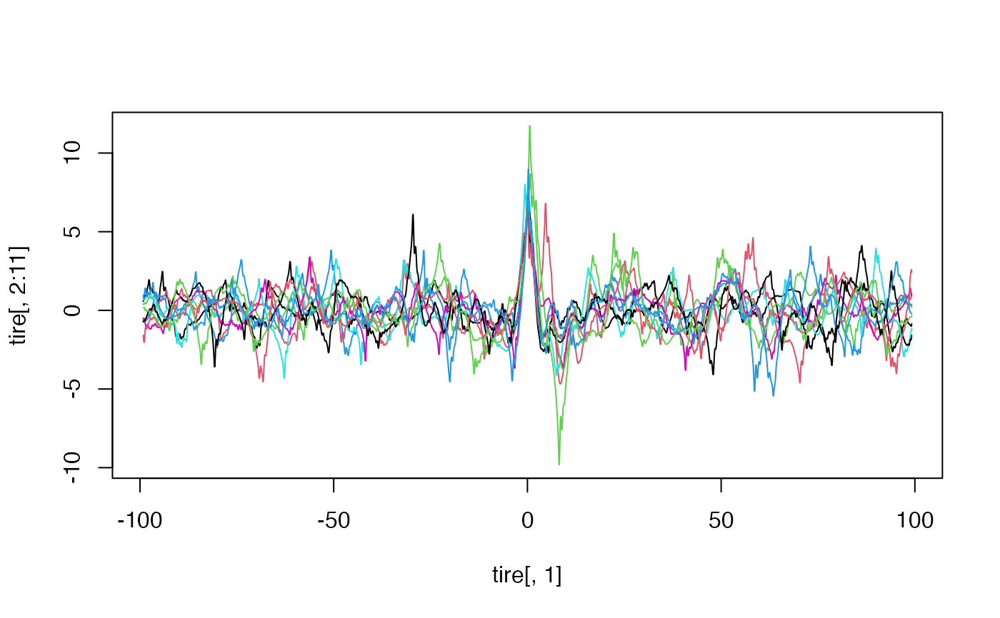
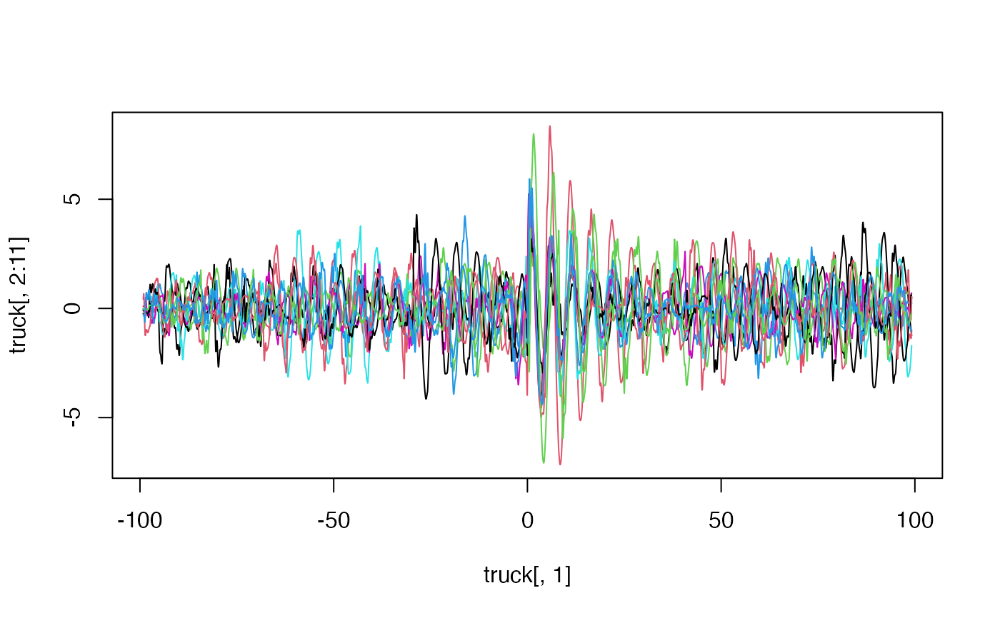
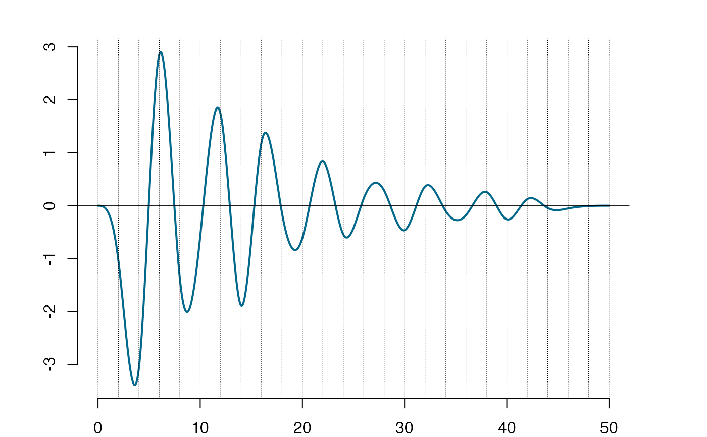
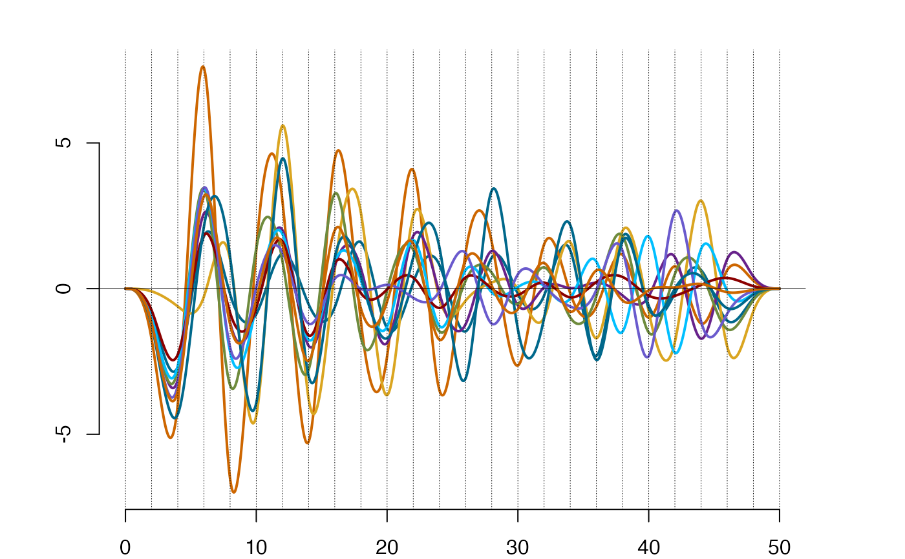
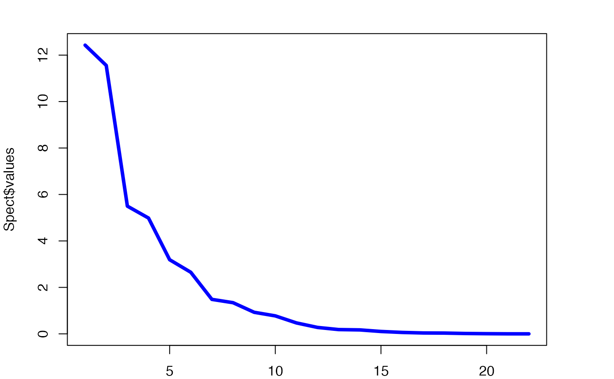
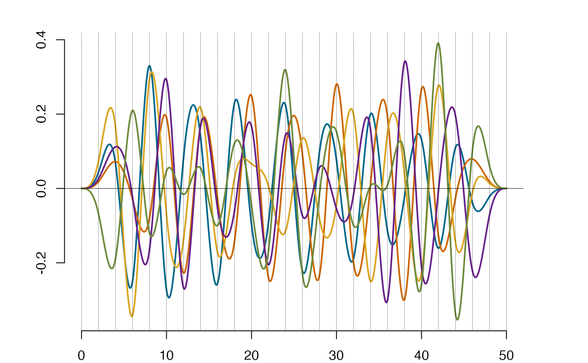

Data on truck responses to a rough road profile
truck.RdThese are simulated data of truck responses to a rough road at the high transient
event. The simulations have been made based on the fit of the so-called Slepian model
to a non-Gaussian rough road profile. Details can be found in the reference. The
responses provided are at
the driver seat. There are 100 functional measurments, kept column-wise in the matrix.
Additionally, the time instants of the measurements are given as the first column in the matrix.
Since the package uses the so-called "lazy load", the matrix
is directly available without an explicit load of the data, thus data(truck) does not need to be invoked.
Data were saved using compress='xz' option, which requires 3.5 or higher version of R.
The data are uploaded as a dataframe, thus as.matrix(tire) is needed if the matrix form is required.
Usage
data(truck)References
Podg\(\mbox{\'o}\)rski, K, Rychlik, I. and Wallin, J. (2015) Slepian noise approach for gaussian and Laplace moving average processes. Extremes, 18(4):665–695, <doi:10.1007/s10687-015-0227-z>.
See also
tire for a related dataset;
Examples
#-----------------------------------------------------#
#----------- Plotting the trucktire data -------------#
#-----------------------------------------------------#
#Activating data:
data(tire)
data(truck)
matplot(tire[,1],tire[,2:11],type='l',lty=1) #ploting the first 10 tire responses

matplot(truck[,1],truck[,2:11],type='l',lty=1) #ploting the first 10 truck responses

#Projecting truck data into splinet bases
knots1=seq(0,50, by=2)
Subtruck= truck[2048:3080,] # selecting the truck data that in the interval[0,50]
TruckProj=project(as.matrix(Subtruck),knots1)
MeanTruck=matrix(colMeans(TruckProj$coeff),ncol=dim(TruckProj$coeff)[2])
MeanTruckSp=lincomb(TruckProj$basis,MeanTruck)
plot(MeanTruckSp) #the mean spline of the projections

plot(TruckProj$sp,sID=1:10) #the first ten projections of the functional data

Sigma=cov(TruckProj$coeff)
Spect=eigen(Sigma,symmetric = TRUE)
plot(Spect$values, type ='l',col='blue', lwd=4 ) #the eigenvalues

EigenTruckSp=lincomb(TruckProj$basis,t(Spect$vec))
plot(EigenTruckSp,sID=1:5) #the first five largest eigenfunctions
